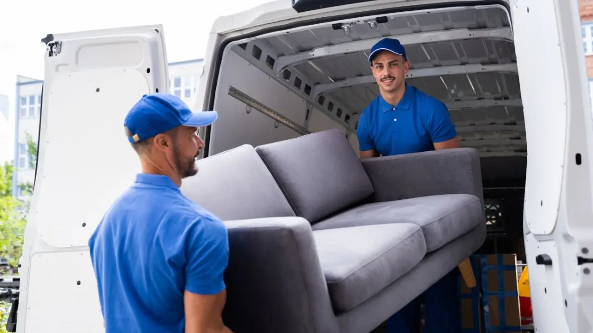

أفضل شركة نقل عفش بالرياض | 0541145506

عندما تفكر في الانتقال إلى منزل جديد أو نقل أثاثك بأمان داخل العاصمة، فإن أول ما يخطر ببالك هو البحث عن أفضل شركة نقل عفش بالرياض تضمن لك الجودة والسرعة وراحة البال. شركة نقل الرياض تفوقت على منافسيها بخبرتها الطويلة وخدماتها الاحترافية التي تلبي احتياجات العملاء بأعلى معايير الأمان والدقة. بفضل تقييمات العملاء الإيجابية والتزامهم بالمواعيد، أصبحت شركة نقل الرياض خيار الكثيرين ممن يبحثون عن أفضل شركة نقل عفش بالرياض تقدم تجربة سلسة وآمنة دون أي متاعب، للتواصل من خلال الواتساب اضغط هنا.
لماذا تحتاج إلى أفضل شركة نقل عفش بالرياض؟
عملية نقل العفش ليست مجرد خطوة عادية، بل قد تكون من أكثر المراحل حساسية عند الانتقال إلى منزل أو مكتب جديد، خاصة في مدينة كبيرة مثل الرياض حيث الزحام وكثرة التفاصيل اللوجستية. ولهذا السبب، فإنك تحتاج إلى أفضل شركة نقل عفش بالرياض تضمن لك تنفيذ المهمة باحتراف ودون أي خسائر أو فوضى. الشركة المتميزة لا توفر فقط سيارة نقل وعمال، بل تمنحك راحة البال من خلال خدمات متكاملة تشمل التغليف الآمن، والفك والتركيب، والنقل في الوقت المحدد. وجود فريق محترف يُدير عملية النقل بكفاءة يجعل تجربتك سهلة وسلسة، ويوفر عليك الوقت والجهد والتكاليف الناتجة عن الأخطاء أو التلفيات. لذلك، لا تترك أثاثك في يد أي جهة غير موثوقة، واختر الأفضل دائمًا.
الخدمات التي تقدمها أفضل شركة نقل عفش بالرياض
عند التعامل مع أفضل شركة نقل عفش بالرياض، لا تحصل فقط على خدمة نقل بسيطة، بل على باقة متكاملة من الخدمات الاحترافية التي تلبي جميع احتياجاتك وتضمن لك تجربة نقل خالية من المتاعب. إليك أبرز ما تقدمه الشركات المتميزة مثل شركة “نقل الرياض“:
1. الفك والتركيب باحترافية
يتم التعامل مع جميع أنواع الأثاث سواء كانت غرف نوم، مطابخ، مكاتب أو قطع أثاث معقدة على يد فنيين مختصين لديهم خبرة طويلة في الفك والتركيب بأمان تام دون تلف أو خدوش.
2. التغليف الآمن والمتطور
توفر أفضل شركة نقل عفش بالرياض مواد تغليف عالية الجودة لحماية الأثاث أثناء النقل، مثل النايلون المطاطي، الكراتين المقواة، والأقمشة المبطنة، لضمان سلامة العفش من الكسر أو الخدش.
3. النقل بسيارات مخصصة ومجهزة
تمتلك أفضل شركة نقل عفش بالرياض أسطولًا من الشاحنات الحديثة المزودة بوسائل التثبيت و الرفع الهيدروليكي، ما يضمن نقل العفش بأمان وسرعة حتى من الأدوار المرتفعة أو الأماكن الضيقة.
4. تخزين الأثاث فى مستودعات آمنة
تقدم الشركة خدمة التخزين المؤقت أو طويل الأمد داخل مستودعات نظيفة وآمنة، مناسبة لمن يحتاج لتأجيل استلام العفش أو الانتقال المؤقت.
5. التنظيف والتعقيم بعد النقل
لضمان راحة العملاء، توفر أفضل شركة نقل عفش بالرياض خدمة تنظيف وتعقيم الأثاث بعد فكّه أو قبل تسليمه، وهو أمر مهم خصوصًا للعائلات التي تهتم بالنظافة والتفاصيل.
6. نقل مكاتب وشركات ومصانع
لا تقتصر الخدمات على المنازل فقط، بل تشمل أيضًا نقل الشركات والمؤسسات والمكاتب بأسلوب منظم لا يؤثر على سير العمل.
7. تأمين شامل على المنقولات
بعض الشركات تقدم خدمة تأمين على العفش، ما يعطي العميل راحة نفسية وضمان إضافي في حال حدوث أي أضرار أثناء النقل.
كيف تضمن شركة نقل الرياض أعلى معايير الأمان والجودة كأفضل شركة نقل عفش بالرياض؟
تحرص شركة نقل الرياض على تقديم خدماتها وفق أعلى معايير الأمان والجودة، مما جعلها تستحق وبجدارة لقب أفضل شركة نقل عفش بالرياض. تبدأ الجودة من اختيار طاقم العمل، حيث يتم تدريب الفنيين على التعامل مع جميع أنواع الأثاث بدقة وعناية، سواء أثناء الفك أو التغليف أو النقل. وتستخدم الشركة مواد تغليف قوية ومتخصصة، مثل النايلون الفقاعي، الزوايا الإسفنجية، والأشرطة اللاصقة، لحماية العفش من أي خدوش أو كسر.
أما من ناحية الأمان، فتوفر الشركة سيارات نقل مجهزة بمصاعد هيدروليكية وحواجز تثبيت داخلية تمنع تحرك الأثاث أثناء
النقل. كما يتم تحميل الأثاث وتفريغه بعناية باستخدام أدوات حديثة تقلل من الاحتكاك أو السحب.
ولأن الثقة أساس العمل، تقدم الشركة ضمانات حقيقية على الخدمة، وتتيح للعميل متابعة عملية النقل لحظة بلحظة.
هذه الاحترافية والانضباط في التنفيذ، إلى جانب التزام الشركة بالمواعيد والأسعار الواضحة، جعل من شركة نقل الرياض الخيار الأول لكل من يبحث عن تجربة نقل عفش آمنة، سريعة، وخالية من أي مفاجآت.
خطوات خدمة نقل عفش بالرياض مع أفضل شركة نقل عفش
عند التعامل مع أفضل شركة نقل عفش بالرياض، تكون خطوات الخدمة مدروسة ومنظمة لتوفير تجربة نقل سلسة وآمنة وخالية من الإجهاد. إليك المراحل الأساسية التي تمر بها خدمة نقل العفش في شركة محترفة مثل شركة نقل الرياض:
1. التواصل الأولي وتحديد الموعد
تبدأ العملية عندما يتواصل العميل مع فريق خدمة العملاء عبر الهاتف أو الواتساب. يتم تحديد موعد مناسب للمعاينة المجانية أو تقديم تفاصيل حول نوع العفش، موقع النقل، والطابق.
2. المعاينة وتقديم عرض السعر
يرسل فريق متخصص لمعاينة كمية العفش وتحديد الأدوات المطلوبة والفريق المناسب. بعد ذلك، يُقدَّم عرض سعر واضح وشامل، بدون أي رسوم خفية.
3. التغليف والفك
في يوم النقل، يبدأ الفريق بتغليف جميع قطع الأثاث باستخدام مواد تغليف عالية الجودة مثل النايلون الفقاعي، الكرتون المقوّى، والبطانيات المبطنة. كما يتم فك الأثاث بعناية خصوصًا غرف النوم والمطابخ لضمان سهولة النقل وعدم تلف أي قطعة.
4. تحميل الأثاث ونقله بأمان
يتم تحميل الأثاث داخل سيارات نقل مجهزة بمصاعد هيدروليكية وأدوات تثبيت داخلية، ما يحافظ على ثبات العفش أثناء الحركة ويمنع حدوث أي خدوش أو كسر.
5. تفريغ الأثاث وإعادة تركيبه
بمجرد الوصول إلى المكان الجديد، يقوم الفريق بإنزال الأثاث بعناية، ثم تركيبه بنفس الجودة التي تم فكه بها، مع ترتيب كل قطعة في مكانها حسب رغبة العميل.
6. تنظيف الموقع والتأكد من رضا العميل
بعد الانتهاء، يقوم الفريق بجمع مواد التغليف وتنظيف المكان، ثم يعرض على العميل مراجعة الخدمة والتأكد من أن كل شيء تم كما هو متفق عليه. بعض الشركات تقدم ضمانًا لفترة محددة ضد أي تلف بعد النقل.
مزايا الاستعانة بأفضل شركة نقل عفش بالرياض
عند التفكير في نقل أثاث منزلك أو مكتبك داخل العاصمة، فإن اختيارك لـ أفضل شركة نقل عفش بالرياض يوفر لك العديد من المزايا التي لا يمكن تجاهلها. فبدلاً من المغامرة بسلامة ممتلكاتك أو الدخول في تجربة مرهقة، تمنحك الشركات الاحترافية مثل شركة نقل الرياض تجربة متكاملة تجمع بين الراحة والأمان والسرعة. إليك أبرز المزايا:
1. سلامة الأثاث وضمان خلوّه من التلف
تتم عملية النقل باستخدام أدوات ومعدات حديثة، ومواد تغليف قوية تحمي العفش من أي خدوش أو كسر، مما يضمن تسليمه كما هو تمامًا.
2. توفير الوقت والجهد
فريق العمل مدرّب على تنفيذ النقل بسرعة وتنظيم، دون الحاجة لأن تشارك في أي مرحلة مرهقة مثل الفك أو التحميل أو الترتيب.
3. فك وتركيب احترافي
توفر الشركة خدمات فك الأثاث وتركيبه باحتراف، بما في ذلك الأثاث المعقد مثل غرف النوم والمطابخ، مع ضمان تركيبه بشكل متقن في المكان الجديد.
4. أسطول نقل مجهّز
تستخدم أفضل الشركات سيارات نقل حديثة تحتوي على مصاعد هيدروليكية وأدوات تثبيت داخلية، ما يجعل النقل آمنًا حتى في الأدوار العليا أو المساحات الضيقة.
5. خدمة تخزين آمنة عند الحاجة
بعض الحالات تتطلب تأجيل استلام الأثاث، وهنا توفّر الشركات مستودعات نظيفة وآمنة لحفظ العفش لفترات قصيرة أو طويلة.
6. أسعار واضحة بدون مفاجآت
مع الشركات الموثوقة، ستحصل على عرض سعر تفصيلي قبل بدء الخدمة، بدون أي رسوم إضافية غير متفق عليها.
7. خدمة عملاء سريعة واستجابة فورية
فريق الدعم متاح للرد على استفساراتك في أي وقت، وتحديد المواعيد بما يتناسب مع جدولك، ما يعكس الاحترافية والاهتمام براحة العميل.
لماذا تعد شركة نقل الرياض هي الخيار الأمثل لنقل العفش في الرياض؟
تُعتبر شركة نقل الرياض الخيار الأمثل لكل من يبحث عن خدمة نقل عفش احترافية في العاصمة، وذلك لما تتمتع به من مزايا عديدة تميزها عن غيرها من الشركات. أولاً، تعتمد الشركة على فريق عمل مدرب بخبرة عالية قادر على التعامل مع كافة أنواع الأثاث مهما كانت قيمته أو تعقيد تركيبه. كما تستخدم الشركة أحدث تقنيات التغليف ووسائل النقل المجهزة بأفضل الأدوات لضمان سلامة الأثاث خلال جميع مراحل النقل.
بالإضافة إلى ذلك، توفر شركة نقل الرياض أسعارًا تنافسية مع شفافية كاملة، حيث لا توجد رسوم خفية أو مفاجآت، مما يجعل العميل يشعر بالراحة والثقة. لا تقتصر خدماتها على النقل فقط، بل تشمل الفك والتركيب، التخزين المؤقت، والتنظيف، ما يجعلها شركة شاملة تلبي كل احتياجات النقل بسهولة ويسر.
وبفضل تقييمات العملاء الإيجابية وسمعتها الممتازة في السوق، أصبحت شركة نقل الرياض الرائدة والموثوقة، التي تضمن لك انتقالًا سلسًا وآمنًا دون أي متاعب.
العوامل التي تؤثر على تكلفة نقل العفش بالرياض
عند التخطيط لنقل العفش في مدينة كبيرة مثل الرياض، من المهم فهم العوامل التي تؤثر بشكل مباشر على تكلفة الخدمة، حتى تتمكن من اختيار العرض المناسب دون مفاجآت مالية. إليك أبرز العوامل التي تحدد سعر نقل العفش:
1. كمية ونوع العفش
كلما زادت كمية الأثاث المطلوب نقله أو كان العفش ذا قطع كبيرة وثقيلة مثل الأرائك والدواليب الكبيرة، ارتفعت تكلفة النقل. كما أن الأثاث القابل للكسر يحتاج إلى تغليف إضافي يزيد من التكلفة.
2. المسافة بين المنازل أو المواقع
تؤثر المسافة بين موقع التحميل وموقع التسليم بشكل كبير على السعر، فالنقل لمسافات طويلة داخل الرياض أو إلى مدن أخرى يتطلب وقتًا ووقودًا أكثر، مما يرفع التكلفة.
3. عدد الطوابق وصعوبة الوصول
إذا كان النقل من أو إلى شقق في أدوار عالية بدون مصاعد، أو في مناطق ضيقة يصعب الوصول إليها بالشاحنات الكبيرة، يزداد تعقيد العمل وتكلفته.
4. نوع السيارة المستخدمة وحجمها
تعتمد التكلفة أيضًا على نوع وأساليب النقل، فالسيارات الحديثة المجهزة بمصاعد هيدروليكية وتثبيت داخلي توفر أمانًا أعلى لكنها قد تكون أكثر تكلفة.
5. خدمات إضافية مطلوبة
خدمات مثل الفك والتركيب، التغليف الخاص، التخزين المؤقت، والتنظيف بعد النقل تضاف إلى التكلفة الإجمالية حسب حاجة العميل.
6. وقت تنفيذ الخدمة
في بعض الحالات، قد تؤثر أوقات الذروة أو النقل العاجل على السعر، حيث تفرض بعض الشركات رسومًا إضافية مقابل الخدمة السريعة أو خلال أوقات غير الاعتيادية.
نصائح هامة قبل نقل العفش في الرياض
نقل العفش خطوة كبيرة تتطلب الكثير من التخطيط والتنظيم، خاصة في مدينة مزدحمة مثل الرياض. لذلك، نقدم لك أهم النصائح التي يجب اتباعها قبل نقل العفش لضمان عملية آمنة وسلسة دون تلفيات أو توتر:
1. اختر شركة نقل موثوقة
قبل كل شيء، احرص على التعامل مع أفضل شركة نقل عفش بالرياض، وراجع تقييمات العملاء السابقين وتأكد من أن الشركة تقدم خدمات شاملة تشمل التغليف والفك والتركيب والنقل بسيارات مجهزة.
2. قم بترتيب الأغراض وتصنيفها مسبقًا
ابدأ قبل يومين أو ثلاثة بفرز الأثاث والمحتويات. تخلّص من الأشياء غير الضرورية أو القديمة لتقليل حجم النقل، وخصص صناديق منفصلة للأشياء الثمينة والهشة.
3. استخدم تغليفًا مناسبًا
احرص على توفير مواد تغليف مناسبة مثل النايلون الفقاعي، الكراتين المقواة، واللاصق القوي، خاصة لحماية القطع الزجاجية والإلكترونيات.
4. وثّق محتوياتك
قم بتصوير كل غرفة قبل التفكيك، وسجّل محتويات كل صندوق. هذا سيسهل عليك ترتيب الأثاث مجددًا في المنزل الجديد ويقلل من احتمالية فقدان أي شيء.
5. افصل وفك الأجهزة الكهربائية بحذر
قبل النقل بيوم، افصل جميع الأجهزة الكهربائية مثل الثلاجة والغسالة واتركها لتجف من الداخل لتفادي التسربات أو الأعطال أثناء النقل.
6. اختر وقت النقل بعناية
حاول اختيار وقت صباحي وخلال أيام الأسبوع لتفادي الزحام، واحرص على أن يكون الطقس مناسبًا، خصوصًا في فصل الصيف بالرياض.
7. أبلغ إدارة المبنى مسبقًا
إذا كنت تسكن في عمارة أو مجمع سكني، أخبر الإدارة بموعد النقل لتسهيل دخول الشاحنة وتفادي أي اعتراضات أو تأخيرات.
كيفية التواصل مع شركة نقل الرياض أفضل شركة نقل عفش بالرياض
إذا كنت تبحث عن أفضل شركة نقل عفش بالرياض لضمان نقل أثاثك بأمان واحترافية، فإن شركة نقل الرياض هي الخيار الأمثل لك. يمكنك التواصل معهم بسهولة عبر الاتصال الهاتفي على الرقم المخصص لخدمة العملاء، أو من خلال إرسال رسالة عبر تطبيق واتساب بالضغط هنا لطلب عرض سعر أو حجز موعد يناسبك. كما يمكنك زيارة الموقع الإلكتروني الرسمي للشركة بالضغط هنا حيث تجد نموذجًا إلكترونيًا لتقديم طلب النقل بسرعة وسهولة. بالإضافة إلى ذلك، تتواجد الشركة على منصات التواصل الاجتماعي مثل فيسبوك وإنستغرام لتزويدك بأحدث العروض والنصائح. لا تتردد في التواصل مع شركة نقل الرياض لتجربة نقل عفش مريحة وآمنة.